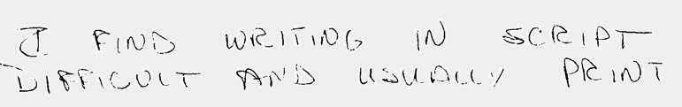

Eldene Whiting wrote a fantastic book called Traitsmatch that helps people understand their "Occupational Personality" through handwriting analysis. Take a few minutes and give it a try to see what your writing tells you about the kinds of jobs that would be a perfect match for you! Here, with Eldene's permission, is an excerpt from her book .
This is Part 2 - to go to Part 1 (you should read this first) click HERE.
5. Can I achieve my ambitions....
Check diagonals, t-bars and pressure.

"Ambition" Diagonals, High t-bars, strong pressure
Diagonals indicate the drive and direction you want togo. High
t bars show the ambitious ideas you will add. The strong pressure
indicates how much vital energy you are willing to use.
6. ....or am I only fooling myself?
Check your ovals.
"Self deception" left looped ovals
Ovals reflect your thinking clarity. Looping on the left means
you may be kidding yourself.
7. What's the use of fooling around? It's straight to the top for
me!
Traitmatch your Leaderscript.

"Leadership" Large caps, strong pressure, harmonious
Large capitals show yourconfidence in yourself. Strong pres-
sure enhances the energy and vitality. Harmonious picture indi-
cates your ability to balance thinking and action.
8. What about my money skills?
Examine your numbers, spacing, margins, i-dots and t-bars.
"Money skills" Good number picture
Clearnumbersand a"checkee'two(2) show moneyawareness.
Spacing of margins and lines indicate your sense of the right way
todothings. Precise placement of i dots and t bars show accuracy.
9. How's my mechanical ability?
Check for use of printing; size and legibility of writing.

"Mechanical" Printing, size, legibility
Printing shows a mechanical mind more concerned with "things"
than with people. Large MZH means you prefer large pieces of
machinery like computers or bulldozers. Small MZH indicates
interest in small things like watches, parts of machines. Legibility
reveals your willingness to do a good job which assures you of
success.
10. Am I quick to act or cautious about my decisions?
Traitmatch for speed, pressure, beginning strokes, and length of
t-bars.
"Impulsive" Speed, t cross
Speed is sometimes hard to detect in writing; i dots and t bars
that fall to the right of the stem show quick thinking and acting.
If the t bar is also long and tapered, the speed is greater.

"Cautious" Beginning strokes, short t cross
Long beginning strokes indicate caution. If there isalsoa little
glob of ink at the beginning, this hesitation is usually caused by
fear. Short t crosses also help to "pull back" from impulsive be-
havior.
11. I've analyzed my handwriting, but still have difficulty
believing what I found, even though my best friends agree.
Check for brace-like t's and d's and heavy pressure.
"Stubbornness" Braced strokes, heavy pressure, blunt
Braced strokes in t's and d's are a sure sign of stubbornness.
Pressure adds force. Blunt endings to letters orwords reflect a
blunt tongue as well.
Gettheidea? Delve into your own personality with the blinders
of self-bias removed. Sincejob happiness resultsfrom thefullest
utilization of your uniqueness, you must discover yourself first.
If you have any doubts, seek out a professional handwriting
analystwhocan use your handwritingfora thorough evaluation
of your talents and weaknesses. You alone must make the f inal
decision, so search for what you really want by a f urther step.
Define Your Dream Job
Next, decide what you want to do. What line of work do you
desire? What career do you wish to pursue? You will be spend-
ing more time on a job than in any other activity. You could
easily say the job is your life, or should be. So much energy of
mind and body goes into preparing for it, engaging in it, and
relaxing from it. It's a shame if the heart's not in it, too. Dis-
covering your own occupational personality prior to seeking
employment gives you greater opportunity for happiness.
Rather than fulfilling some employer's job needs, you'll be
bringing about the fulfillment of your own personal desires,
accomplishing your own individual goals.
Before you define your dream job, get rid of certain pre-
conceived notions which are pitfalls to your goal. First, forget
about-
What other people want you to be (this includes your spouse,
friends, relatives, supervisor or boss);
o What you think other people want you to be.
For the moment, also forget all of the old criteria normally
used to choose a job. Forget how much the job pays. Your goal
is lasting happiness, not a paycheck. If you enjoy what you do,
money will not be a primary concern. If you enjoy what you do,
you also have much greater chance of success, thereby increas-
ing the possibility of better pay!
Forget the promotional opportunities, the benefits, or
prestige. Forget the security the job offers, or where it is
located. For the present, don't even consider the requirements
necessary to be hired for the job! Now you have a good op-
portunity to discover how you want to spend the rest of your life.
Concentrate On Your Own Inner Desires
Be free from all of the wrong reasons which motivate most
people; free from the influence of others; free from restrictive
job qualifications.
Ask yourself: What do I really WANT to do?
Do you have any secret ambitions? Dwell on them. Become
deliciously absorbed in your dream. Interested in spending more
time with your hobby? Often, people desire to do something they
already know a little about. Consider job openings in fields
related to your hobby, or maybe being in business for yourself.
Don't be side-tracked by costs. Continue to explore your mind
for your real interests. What were the tasks you enjoyed most
in previous positions? What jobs did you like best? What were
your favorite school subjects? Scholastic interests can be related
to many occupations.
If you can't narrow your choices down to a particular job, don't
worry. Choose several alternatives for now. As you proceed to
traitmatch yourself into your dream job, your job goal will
become more clearly defined.
You might find it helpful to look through the Occupational
Outlook Handbook (U.S. Department of Labor, Bureau of Labor
Statistics, Bulletin 1700). It lists over 800 different occupations;
everything from applying the candy coating on medical pills to
uranium mining.
Determine the Cost and Your Willingness to Pay
Evaluate your dream job in light of the personality traits found
in your handwriting analysis. It would be ideal, of course, if the
match was exact. If so, you are probably already occupied in
your dream job. It's more likely that there are reasons why they
don't match. Everything has a price, and the differences which
exist between your dream job and your occupational personality
is the price you must be willing to pay to make your dream a
reality.
Do you want to be president of a firm? A commendable desire
if your handwriting revealed that you thrive on heavy responsi-
bility; enjoy weighty decision-making; constant diplomacy;
intense physical and mental exertion, and have an almost
obsessive ambition. Otherwise, you are not being completely
honest with yourself.
If your family always wanted you to enter the convent, but
you've always had a secret yen for belly-dancing, and if your
handwriting backs up your hidden ambition with traits like
rhythm, artistic talent, showmanship and a strong physical and
sensual drive, you'd be better off to put a jewel in your navel
than a habit on your head.
Do you find you love the outdoors? Turn in your key to the
executive washroom and become a lumberjack-or postman-or
football coach, if that's what will make you happy. It's your life.
Live it!
This doesn't mean rushing out and quitting the job you have
now, unless you can afford it. Use your present job as a survival
cushion while you prepare for your dream job. The cost of your
dream job may be in time and patience; in more education
through evening classes or correspondence courses; in making
the appropriate contacts who can help you find the job you seek.
You will have a clearer picture of your goals and your
ability to achieve them by:
A. Honesty
B. Evaluating your personality through Traitmatch
C. Defining your dream job
D. Determining the cost and your willingness to pay
Remember, there's no one better qual if ied to make you happy
than you. Why spend the only life you'll ever have in a job that
doesn't stimulate you and make you eager to start a new day?
Follow your star! But before you hitch your wagon up, take a
good look at what's inside it. Most important of all, remember
that you'll be happiest in a job which utilizes the full potential
of your occupational personality. The uniqueness that is you.